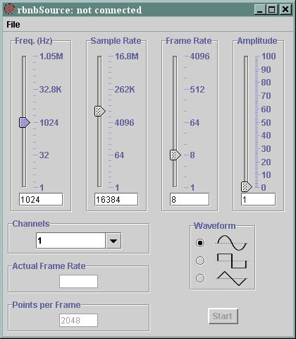

rbnbSource
User Manual
V2.4
August 31, 2001
Copyright, Creare Inc.
Table Of Contents
Introduction
Overview
The rbnbSource Java application generates and streams test signals
to an RBNB DataTurbine. The following figure illustrates the rbnbSource
user interface window.

Setup and Startup
rbnbSource needs to be run under a Java Virtual Machine (JVM). The
format of the command line looks like the following:
java -jar source.jar
Use the
File/Open selection to initiate a connection.